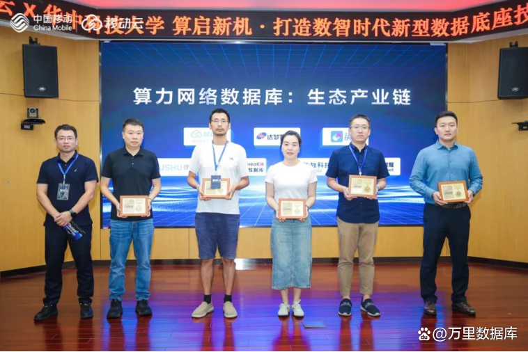
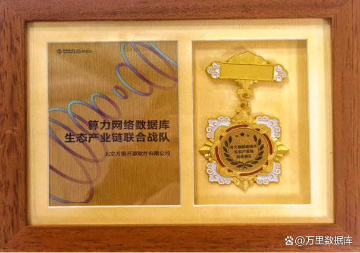
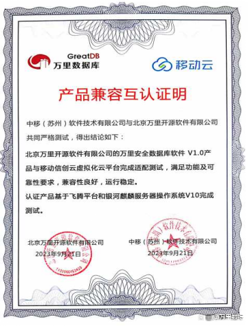

链接未来！万里数据库加入移动云「算力网络数据库生态产业链」
近日，中国移动云在华中科技大学举办“智算浪潮下数据库发展论坛”，共同探讨打造数智时代新型数据底座的技术应用与创新。论坛重磅发布了《算力网络数据库白皮书》、算力网络数据库技术攻关专项行动及算力网络数据库产业链需求等内容。
中国移动近年来持续加大算力网络投入，强化算网技术创新，强调算网生态合作。万里数据库受邀出席本次论坛，紧跟中国移动算网业务布局，积极加入中国移动牵头的“算力网络数据库生态产业链”。
万里数据库将以安全数据库GreatDB、数据迁移及运维管理平台等一站式数据库产品与解决方案为核心，积极发挥先进数据库技术的创新引领作用，联合移动云等合作伙伴打造具备一体化、全域数据流通、AI融合等多特征的数据库统一算网能力。

▲万里数据库加入算力网络数据库-生态产业链
数据库作为信息技术领域三大核心基础之一，肩负着承上启下的重要任务。此次启动的算力网络数据库技术攻关专项任务，集结“联合攻关体”、“载体创新”、“研发应用”三种组织阵型单位，旨在打造智能全域分布式调度、全场景覆盖、多引擎融合的统一数据库底座。此举不仅标志我国在算力网络数据库领域迈出了坚实的一步，更有望为数据库发展带来前所未有的变革和提升。
万里数据库有幸见证该专项任务发布，希望未来能联合产学研各界，围绕攻关关键“卡脖子” 技术、锻造数智化能力长板等领域展开紧密合作，并协同中国移动云培养“专精特新”高水平科技创新人才。

作为中国移动超过10年的战略合作伙伴，万里数据库早在2013年便与中国移动在河南移动相关项目达成合作，并先后中标中移动OLTP数据库联合创新项目、中移动分布式OLTP数据库框架采购项目、中移动信息2023-2025年国产数据库原厂技术服务框架采购项目，服务于中移信息总部、山东、河北、湖南、宁夏、甘肃、南方基地等10余个省市分公司近百个业务系统，以落地可行的实践与解决方案助力中国移动集团总部及下辖多个省市分公司核心、重点业务系统实施了数据库国产化替代工作。
近期，万里数据库与中国移动云完成了兼容互认证，进一步深度加入中国移动生态，共同推进数据库技术的创新与应用，为中国移动构建5G时代的数字智能运营商提供安全稳定、专业高效、易用便捷的全方位数据库技术支撑与服务体系保障。

兼容互认证明
此次加入移动云算力网络数据库生态产业链，万里数据库将紧密联动产业链上下游企业，提供新技术和新形势下的技术问题解决思路，弥补产业链中的空缺短板，加固国产数据库软件核心技术护城河，树立科技创新信心，以便更好地为数据库国产替代乃至社会经济发展添油助力。